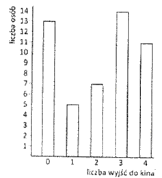
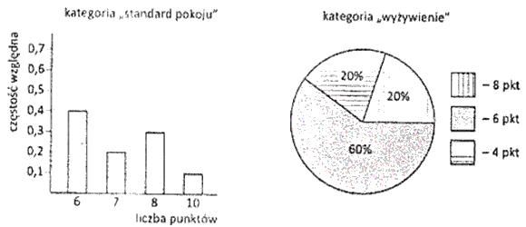

Różne zadania ze statystyki
Przeprowadzono sondę uliczną, zadając pytanie: "Ile razy byłeś w kinie w ciągu
ostatniego miesiąca?". Wyniki sondażu przedstawiono na diagramie poniżej. 
 Rozwiązanie PDF (w powyższym pdf-ie jest błąd w pierwszej linijce podpunktu b) - moda wynosi
3, a nie 14).
Rozwiązanie PDF (w powyższym pdf-ie jest błąd w pierwszej linijce podpunktu b) - moda wynosi
3, a nie 14).
- Jaki procent badanych osób było w kinie więcej niż jeden raz w ciągu ostatniego miesiąca?
- Jaka jest mediana wyjść do kina? Wskaż modę.
- Ile wynosi średnia liczba wyjść do kina.
- Oblicz odchylenie standardowe od średniej liczby wyjść do kina. Wynik podaj z dokładnością do jednego miejsca po przecinku.
Rozwiązanie PDF (w powyższym pdf-ie jest błąd w pierwszej linijce podpunktu b) - moda wynosi
3, a nie 14).
Właściciel tatrzańskiego pensjonatu Giewont przeprowadził wśród 20 losowo
wybranych gości sondaż, badając zadowolenie wczasowiczów w trzech kategoriach: standard pokoju - S,
wyżywienie - W, oraz atrakcyjność programu sportowego - A. Każda z badanych osób oceniała pensjonat
w każdej z wymienionych kategorii, przyznając liczbę całkowitą punktów 1-10. Następnie właściciel
obliczył średnią ważoną z następujących liczb:
Rozwiązanie PDF
XS - średniej liczby punktów w kategorii S (z wagą 2)
XW - średniej liczby punktów w kategorii W (z wagą 3)
XA - średniej liczby punktów w kategorii A (z wagą 3)
Pensjonat uzyskał ocenę końcową równą 7,04. Oblicz ile wynosiła średnia liczba punktów w
kategorii A, jeśli ocena pensjonatu w dwóch pozostałych kategoriach przedstawiała się następująco:
XW - średniej liczby punktów w kategorii W (z wagą 3)
XA - średniej liczby punktów w kategorii A (z wagą 3)
Rozwiązanie PDF Średnia arytmetyczna trzech liczb a, b, c jest równa 2. Wariancja tych liczb
wynosi 3. Oblicz sumę kwadratów liczb a, b i c.
Rozwiązanie PDF
Rozwiązanie PDF W pewnej firmie średnia płaca pracowników produkujących wynosi 2819 zł, zaś
średnia płaca pozostałych pracowników tej firmy wynosi 2483 zł. Średnia płaca wszystkich pracowników
firmy jest równa 2723 zł. Oblicz, jaki procent pracowników produkcyjnych stanowią pozostali
pracownicy tej firmy.
Rozwiązanie PDF
Rozwiązanie PDF W I semestrze z matematyki Maciek otrzymał 15 ocen, z których wszystkie to bardzo
dobre i dostateczne. Oblicz ile piątek ma Maciek, jeśli trójek ma więcej, a wariancja jego ocen
wynosi 0,96.
Rozwiązanie PDF
Rozwiązanie PDF